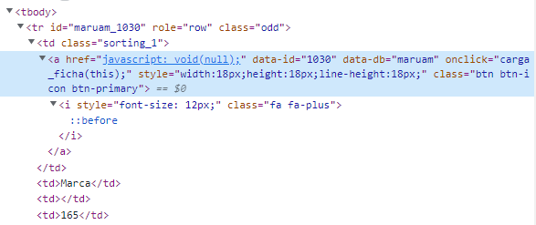

Preview picture from Kristina Tripkovic on Unsplash
A few months ago, I gave a training on RSelenium, a package that allows us to
reproduce all the actions we do in a browser (open a website, scroll, click on a
button, etc.) with some R code. This is very useful to perform some webscraping on pages that are dynamically updated, meaning that we cant simply use the URL to get the HTML we want. I wont explain the basics of webscraping here, there are plenty of articles on this already and the vignettes on the rvest website are very good.
Something I mentioned very briefly in my RSelenium slides is that, in some cases, it is possible to avoid using RSelenium at all by performing the POST requests ourselves1. However, a few days ago, another case of dynamic webscraping came to me and I thought that maybe that was a good opportunity to try doing this first. But before diving into this example, lets explain a bit more POST (and GET) requests and why using them directly could save a lot of time.
POST and GET requests: what?
There are already a lot of resources on POST and GET requests, like this W3schools page, so here I will only do a brief summary.
Requests and responses
What happens when we click on a button, open a new link, or other actions? The website sends a request to the server, the server sends a response back to us, and the website is updated using this new data that the server provided. There are several types of requests, the two most common being GET and POST requests.
Both GET and POST are used to request data but they have key differences.
GET requests
One important thing to note in GET requests is that the query parameters (which describe what data we want to obtain) are displayed in the URL after a question mark ?. An example of GET requests is the World Bank API. Using an example on their website, we can start from this query to get the data for a specific indicator and all countries:
http://api.worldbank.org/v2/country/all/indicator/SP.POP.TOTLBy default, this will show the data in the XML format. If we want to use the JSON format instead, we can add a parameter format in the URL:
http://api.worldbank.org/v2/country/all/indicator/SP.POP.TOTL?format=jsonThis type of requests changes the URL, so this is not very useful in our case where the URL doesnt change at all.
POST requests
In a POST request, the website also sends information to the server and the server also sends data back to us but this time the URL doesnt change, the website is dynamically updated. This is often used when we fill a form online: depending on what the user provided, the data sent back by the server is not the same.
Basically, using RSelenium for dynamic webscraping boils down to go to the right webpage, fill the inputs so that a POST request is performed behind the scenes, and then scrape the data that the server provided.
But what if we could avoid doing all these steps by performing the POST requests directly from R? That would be quicker and we would also avoid all issues related to RSelenium (which can be a pain to properly set up). For this to work, we need to know the detailed request to send to the server.
Making POST requests from R
There are two main packages to do this: httr and httr2. The latter is just a couple of years old and has being developed with a lot of convenient built-in features (retries if a query failed, secure secrets, etc.2).
We dont need very advanced features here so lets use httr. This package provides a function POST() that (surprise!) allows us to make POST requests. Lets explore this with an example.
Example
The Spanish Office of Patents and Brands3 has a nice website where you can get historical data about patents and brands from about mid-19th century to mid-20th century. You can type anything you want in the search bar (e.g a city name), specify the years range, and it provides a list of patents, their title, the exact date at which they were done, and some information on the person or company that made the patent.
Note: this website is in HTTP only, not HTTPS. Therefore, if you use Firefox with the mode HTTPS Everywhere enabled, you need to put http://historico.oepm.es in the list of exceptions (see here).
In the output table, we can see a + button for each row. Clicking on this button displays more detailed information for the patent (e.g the category it belongs to). Ideally, what we would like is to obtain this detailed information for all records. This had less to do with POST requests so I show how to do this in the Bonus section at the end.
This website is dynamically updated, meaning that we have to use RSelenium or reproduce POST requests. These are the packages we will use:
Step 1: find the POST request parameters
To see the requests and responses, we can use the tab Network in the developer console. Fill the search input (for example type Madrid), open the network tab and then click on the magnifying glass icon to run the query. You can see what we send to the server and what the server sends back:

We see four lines:
search_lib.phpSpanish.json- two PNG files
We already know that the information we want is not the images so we can discard the last two lines. The Spanish.json is intriguing, maybe the data we want is in this JSON? When we click on this request, we see the full URL, but if we open it in another tab, it turns out that this JSON only contains useless information like the loading message.
So theres only search_lib.php left, what were looking for must be in there. We see several things when we click on it. First, we see that it is a POST request but if we open the URL, it says Invalid arguments. This makes sense, theres nothing unique in this URL, nothing that would allow the server to know the records it should send back.
We can see a Payload tab when we click on the request and it seems that this is where our parameters are stored:

Step 2: build the query
Great, but how do we know the exact query? Well, the parameters are displayed in a cleaned way, but the button View source shows the raw query:
cadena=madrid&tb=SPH_MATCH_ALL&rangoa=1826%2C1966&indexes%5B%5D=privilegios&
indexes%5B%5D=patentes&indexes%5B%5D=patentes_upm&indexes%5B%5D=marcas&
timestamp=Mon May 08 2023 15:38:09 GMT+0200 (Central European Summer Time)We can now replace the city, years or patent types in the query (the timestamp is useless so I remove it):
city <- "madrid"
year1 <- 1850
year2 <- 1870
query <- paste0(
"cadena=", city, "&tb=SPH_MATCH_ALL&rangoa=", year1, "%2C", year2,
"&indexes%5B%5D=privilegios&indexes%5B%5D=patentes&indexes%5B%5D",
"=patentes_upm&indexes%5B%5D=marcas"
)Step 3: perform the query
We now have:
- the base URL that the website contacts to get the data
- the parameters in raw format
The next step is to actually perform the query:
# use politely() to tell the website who is performing the requests and to add
# a delay between requests (here we only do one)
polite_POST <- politely(POST, verbose=TRUE)
POST_response <- polite_POST(
"http://historico.oepm.es/logica/search_lib.php",
add_headers(
"accept" = "*/*",
"accept-language" = "en-GB,en-US;q=0.9,en;q=0.8",
"content-type" = "application/x-www-form-urlencoded; charset=UTF-8",
"x-requested-with" = "XMLHttpRequest"
),
body = query
)You can see additional information in add_headers(). This information is available in the Headers tab when the click on the request. However, I dont really know why some of these headers are necessary and others are not. Note that you can easily get these headers by doing a right-click on the POST request (on the left of the Network tab) > Copy value > Copy as fetch and then pasting it anywhere.
Step 4: extract the information
We can extract the HTML from the response with content():
content(POST_response, "parsed"){html_document}
<html>
[1] <body><div class="rs1 row space-bottom">\n<div class="col-md-10 ...This is the HTML code from the Mostrando xxx de xxx resultados encontrados to the bottom of the page. We only want the table, so we extract it with rvest::html_table():
content(POST_response, "parsed") |>
html_table()[[1]]
# A tibble: 12 7
`` TIPO SUBTIPO EXPEDIENTE FECHA DENOMINACION_TITULO
<lgl> <chr> <chr> <int> <chr> <chr>
1 NA Marca "" 103 1870 La Deliciosa
2 NA Marca "Marca de F 54 1867 Fuente de los Cana
3 NA Marca "Marca de F 50 1868 Campanadas para in
4 NA Marca "Marca de F 66 1868 Compaa Espaola
5 NA Marca "Marca de F 76 1869 Tinta Universal
6 NA Marca "Marca de F 80 1869 La Cruz de Puerta
7 NA Marca "Marca de F 82 1869 Chocolate de la Co
8 NA Marca "Marca de F 6 1866 La Corza
9 NA Privilegio "Privilegio 1261 1855 MODO DE FABRICAR U
10 NA Privilegio "Privilegio 2015 1860 PROCEDIMIENTO PARA
11 NA Privilegio "Privilegio 2368 1861 PROCEDIMIENTO PARA
12 NA Privilegio "Privilegio 2631 1863 PROCEDIMIENTO QUIM
# 1 more variable: SOLICITANTE <chr>And voil! You can now customize the query to loop through cities, years, etc. Note that by default, the number of records returned is limited to 250, and we cant bypass this.
Remember: use the package polite to avoid flooding the server with requests. As they say on polites website, the four pillars of polite session are
Introduce Yourself, Seek Permission, Take Slowly and Never Ask Twice.
Bonus
You know how to make POST requests, but at the beginning of the Example section, I said that I wanted the detailed information that is only displayed when we click on a + button in the table.
Using the same method as before, we see that clicking on one of these buttons triggers a GET request of the form ficha.php?id=<ID>&db=<DB>. Problem: these <ID> and <DB> change for each record and their value cannot be easily guessed. However, if we look at the HTML of these buttons, we can see that <ID> and <DB> are stored as attributes of the <a> tag:

Since the have the HTML of the full table (thanks to the POST request), we can extract these attributes with html_nodes():
# get all the attributes for all "+" buttons
list_attrs <- content(POST_response, "parsed") |>
html_nodes("td > a") |>
html_attrs()
# for each "+" button, extract only the id and db attributes
info <- lapply(list_attrs, function(x) {
out <- x[names(x) %in% c("data-id", "data-db")]
if (length(out) == 0) return(NULL)
data.frame(id = out[1], db = out[2])
})
# remove cases where there are no attributes
info <- Filter(Negate(is.null), info)
# transform the list into a clean dataframe
out <- rbindlist(info)
head(out) id db
1: 6 maruam
2: 130 maruam
3: 461 maruam
4: 523 maruam
5: 560 maruam
6: 581 maruamWe now have a very clean table with the id and db values for each row of the HTML table. We can now make a loop through all of these to create the URL and read it with rvest (I only do it once here to avoid making useless requests):
read_html(
paste0("http://historico.oepm.es/logica/ficha.php?id=",
6, "&db=", "maruam")
) |>
html_table()[[1]]
# A tibble: 14 2
X1 X2
<chr> <chr>
1 Nmero de Marca "103"
2 Denominacin Breve "La Deliciosa"
3 Fecha Solicitud "27-10-1870"
4 Fecha Concesin "24-03-1871"
5 Fecha de publicacin Concesin ""
6 Clasificacin NIZA "CLASE31"
7 Caducidad "Caducada"
8 Fecha Caducidad "24-03-1891"
9 Cesiones "S"
10 Propietario "Castell, Joaqun"
11 Lugar de residencia "Madrid"
12 Provincia de residencia "Madrid"
13 Pas de residencia "ESPAA"
14 Profesin "Fabricante, industriales y empresaTheres still some cleaning to do but this post is quite dense so Ill stop here. The full code (POST + GET + cleaning) can be found on this repo, in the file demo.R: webscraping-patents-spain. Thanks for having read so far!
In fact, I completely buried this in the Appendix because RSelenium was already plenty to teach and I didnt want to add another layer of complexity with POST requests.
Im just listing things that are written on the website of
httr2, more details there.